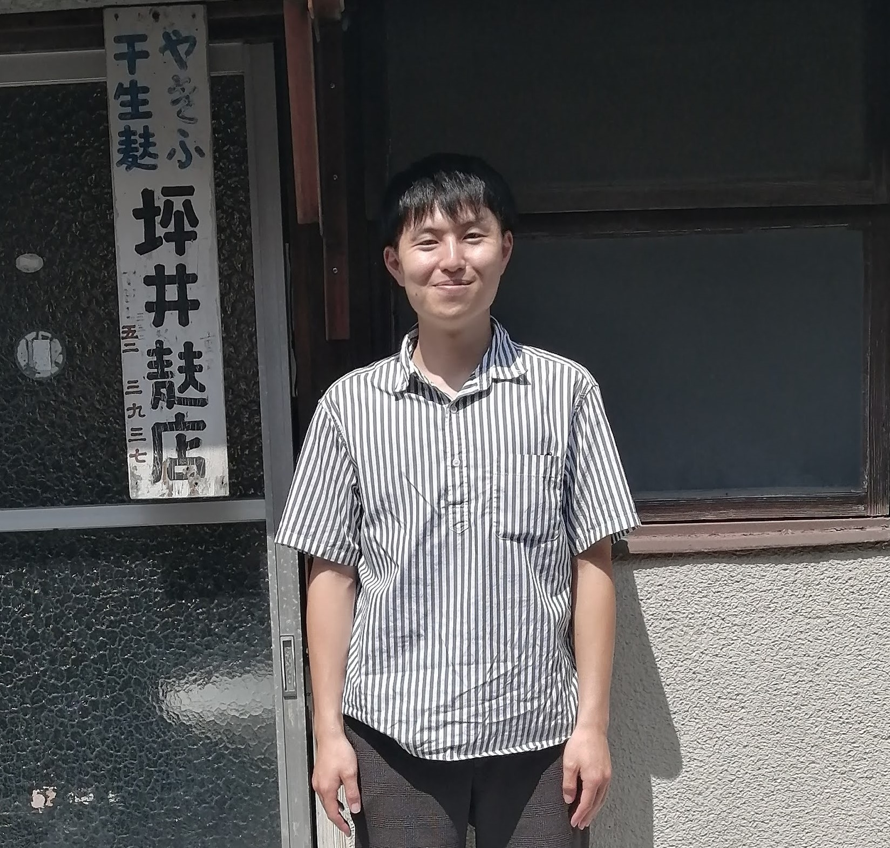

Thank you for your visiting.

Kazufumi Tsuboi 1, 2
1, Graduate School of Information Science, Tohoku University, Japan.
2, [2023/4-] Japan Society for the Promotion of Science, research fellow, DC2.
Research Interests: Urban Economics, Rehional Science, Location Theory, Human Mobility, Machine Learning.
坪井 和史 1, 2
1, 東北大学大学院 情報科学研究科
2, [2023/4-] 日本学術振興会 特別研究員 DC2
Publications
Conference Presentations
International conferences
- Kazufumi Tsuboi, The location of telework company, The 12th Asian Conference in Regional Science, Ulsan (S. Korea), Augest 8-9.
- Kazufumi Tsuboi, Telework and Urban Location Theory: Does Telework Make the Economic Activity Efficient?, Mathematical geographical modelling for environmental humanities, RIMS, Kyoto University, July 6-7, 2022.
- Kazufumi Tsuboi, The Location Theory of Telework Company in the City: Face-to-face Communication and Urban Structure, 11th European Meeting of the Urban Economics Association, London School of Economics and Political Science (UK), April 29-30, 2022.
- Kazufumi Tsuboi, Naoya Fujiwara, Ryo Itoh, Does COVID-19 pandemic change our daily mobility? Evidence from Japanese cellar-phone data, 11thThe Asian Seminar in Regional Science (ASRS), online (Feng Chia University), October 8,2021..
- Kazufumi Tsuboi, Naoya Fujiwara, Ryo Itoh, Network analysis of human mobility and impact of COVID-19 pandemic on human mobility, Mathematical geographical modelling for environmental humanities, online (RIMS, Kyoto University), June 24,2021.
- Kazufumi Tsuboi, Naoya Fujiwara, Ryo Itoh, Mobility change and COVID-19: Evidence from the cellular-phone data in Tokyo, The XV World Conference of Spatial Econometrics Association (SEA 2021), [8-A-03], online (Tokyo), May 26-28, 2021.
Domestic conferences
- Kazufumi Tsuboi, テレワークが創出する経済の効率化と非効率化:都市内立地の理論解析, ネットワーク科学研究会2022, 同志社大学, Augest 23-25, 2022.
- Kazufumi Tsuboi, Telework and location theory of company, 都市経済学研究会, 京都大学, June 17, 2022.
- Kazufumi Tsuboi, Face-to-face communication and urban structures: Do cities change with prevailing telework? , 応用地域学会, online (金沢大学) , November 20-21, 2021.
- Kazufumi Tsuboi, Naoya Fujiwara, Ryo Itoh, 新型コロナウイルスの拡大・緊急事態宣言が人流に及ぼす影響, ネットワーク科学研究会2021, 金沢商工会議所 研修室１, December 11-12, 2021.
Research Grants
-
2022/08/01- 東北大学 学生プロジェクト, 500,000 JPY/year
-
2022/04/01- JST the establishment of university fellowships towards the creation of science technology innovation
Grant Number JPMJFS2102, 340,000 JPY/year
-
2021/10/01-2022/03/31 JST spring Grant Number JPMJSP2114, 340,000 JPY/year
Copyright(c) 2022 Kazufumi Tsuboi